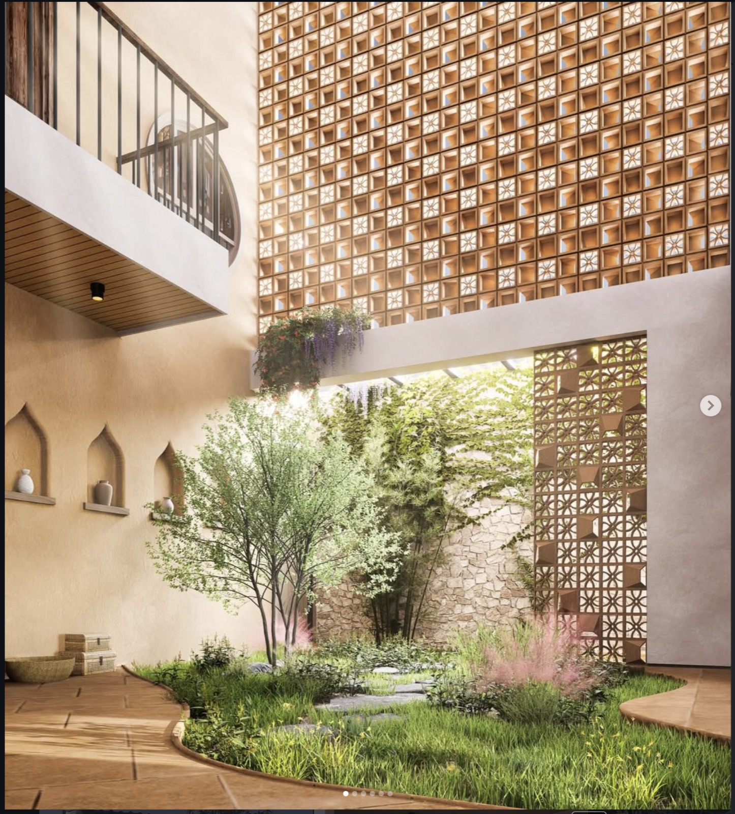
01
NP Residence
Rooms wrap an internal garden behind a perforated timber jaali, so the house breathes and cools itself. Arched plaster niches and a skylit courtyard carry light deep into the plan.
Enquire about this project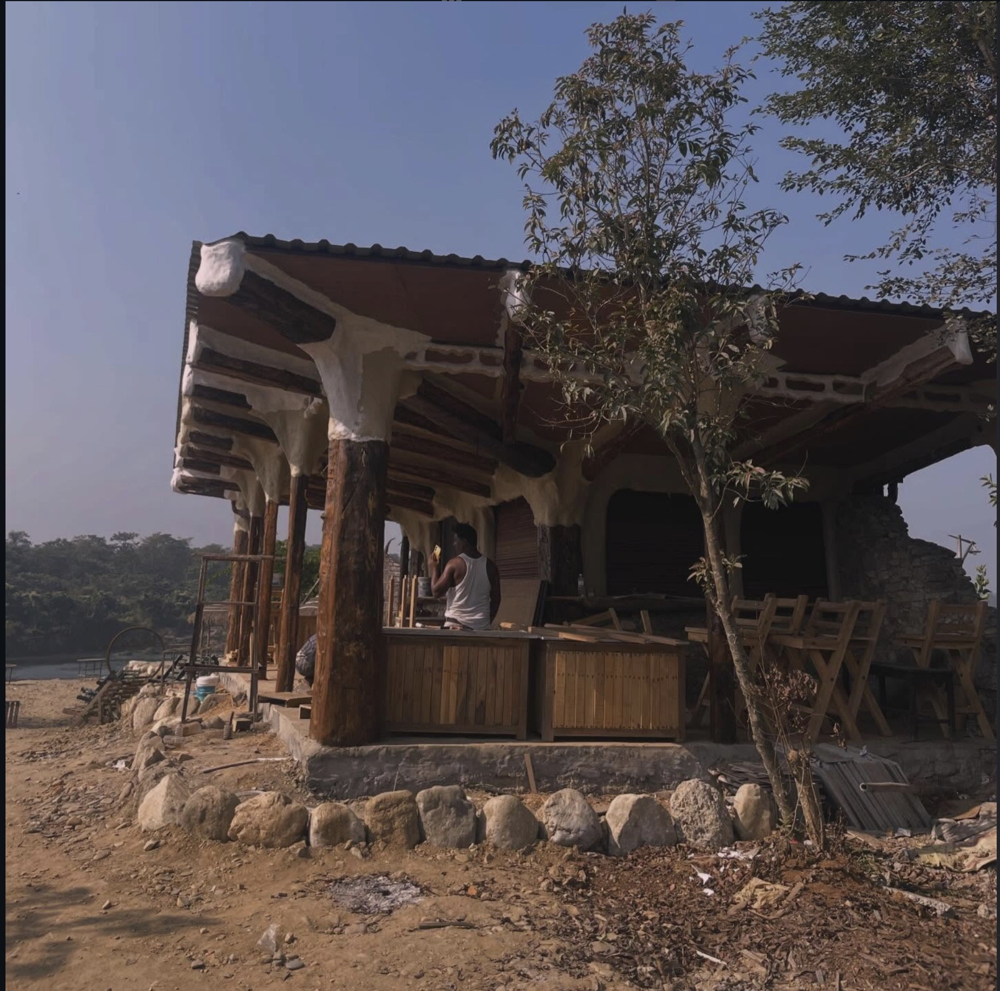
Raw, minimal buildings for the riverbanks, forest edges and courtyards of the Chitwan Valley — shaped by climate, materials and the logic the site already holds.
ScrollA small studio that designs lightly — so each building feels inevitable where it stands.
Habitat Design Studio works across the Chitwan Valley for private clients, hospitality operators and small institutions. The people who walk a site are the people who draw it, and the brief is kept to what the place can carry.
Comfort comes from orientation, shade and airflow before any machine — and from materials sourced within reach of the site: river stone, sal timber, brick and lime, left to read as themselves.

01
Rooms wrap an internal garden behind a perforated timber jaali, so the house breathes and cools itself. Arched plaster niches and a skylit courtyard carry light deep into the plan.
Enquire about this project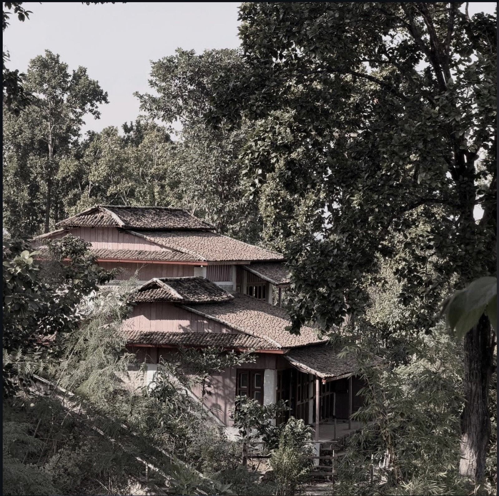
02
Tiered clay-tile roofs step down below the canopy until the building all but vanishes into the forest. Guests arrive into shade and birdsong before they ever see a wall.
Enquire about this project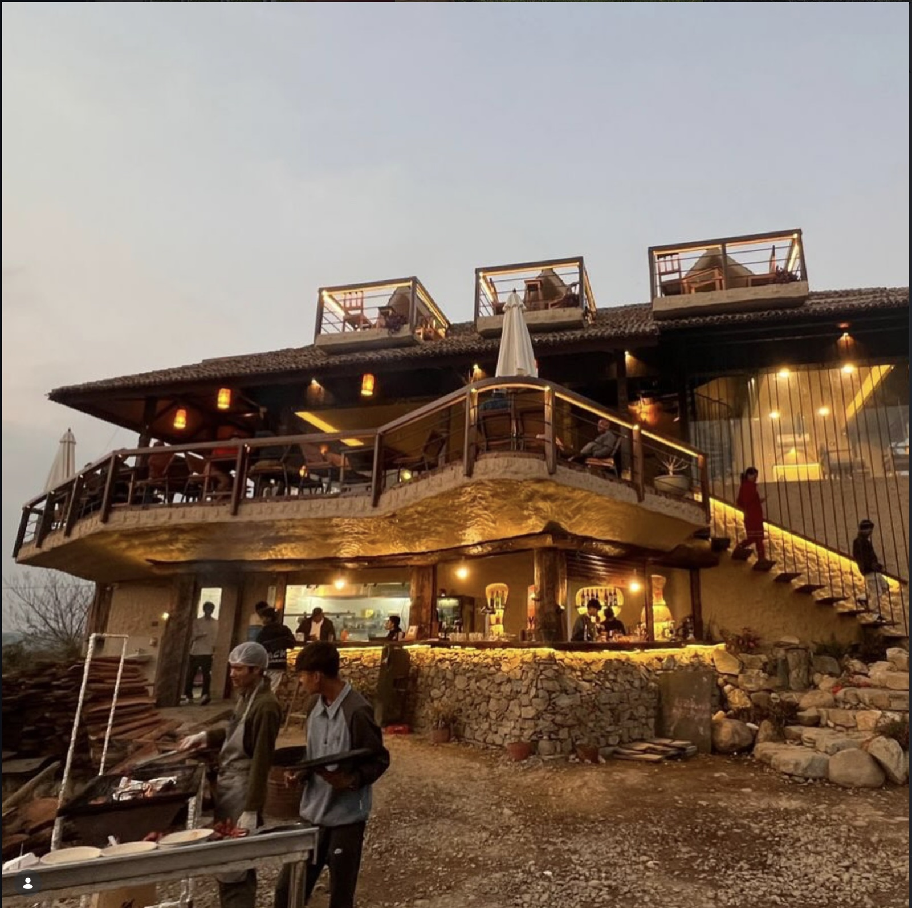
03
A stone base steps down with the slope to a curved deck edge, warm light tracing the terraces at dusk. The hill was read, not cut.
Enquire about this project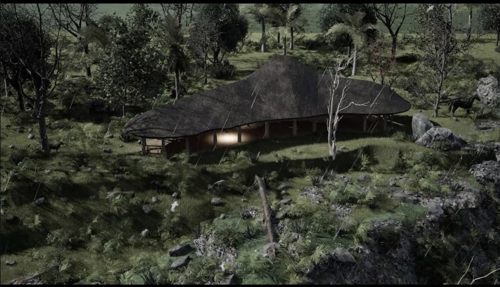
We add the least the site will allow — and let the land keep the last word.The studio's working principle
01
Orientation, shade, mass and airflow do the work before any machine. Comfort is designed into the section, not installed later.
02
River stone, sal timber, brick and lime, sourced within reach of the site and left honest — texture instead of finish.
03
Grade, water and trees are kept in the drawing. We build around what is already there, never over it.
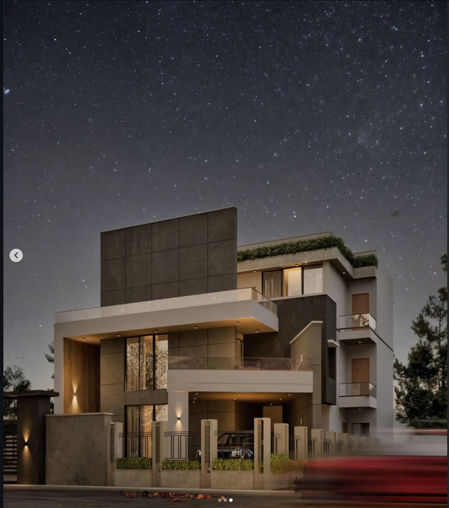
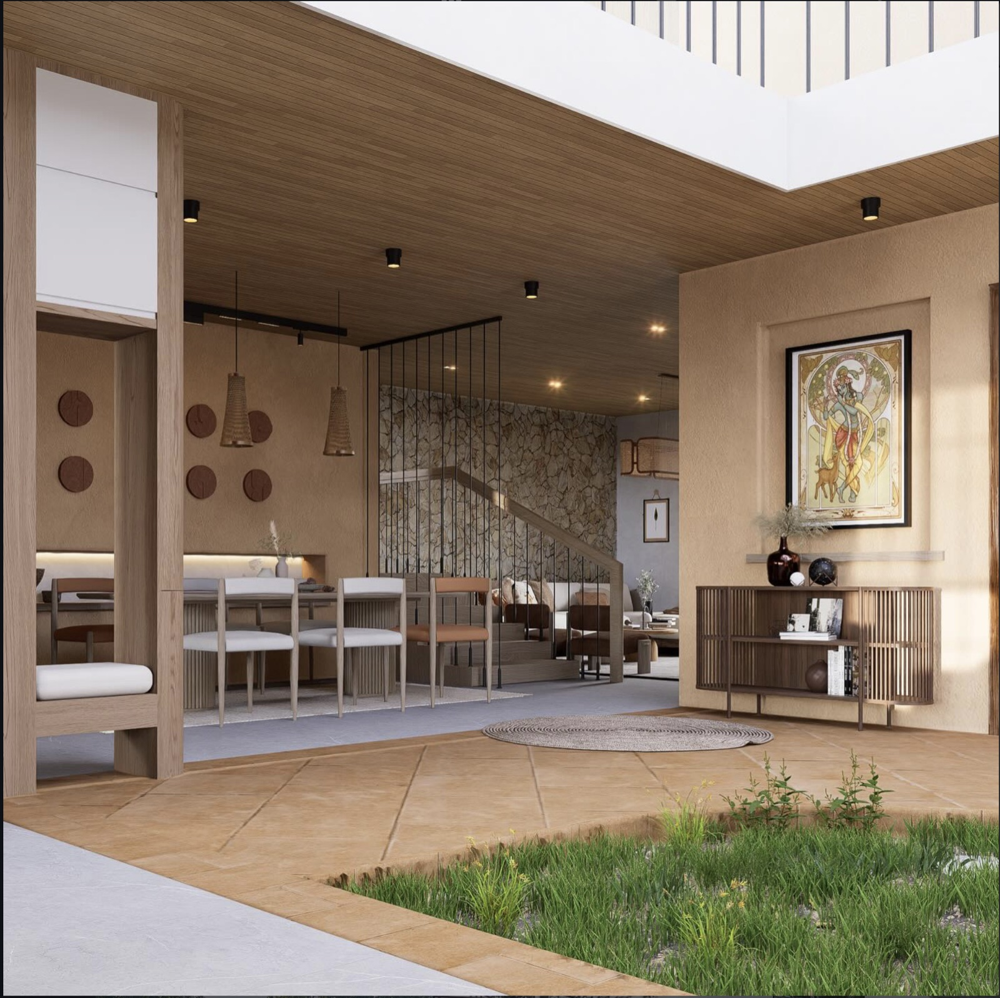
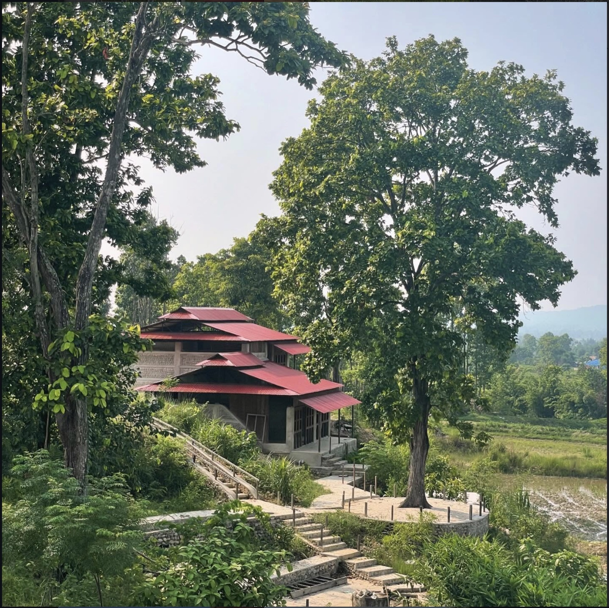
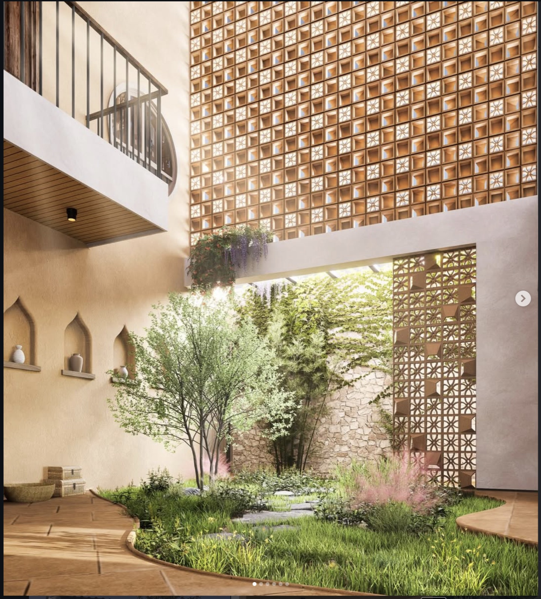
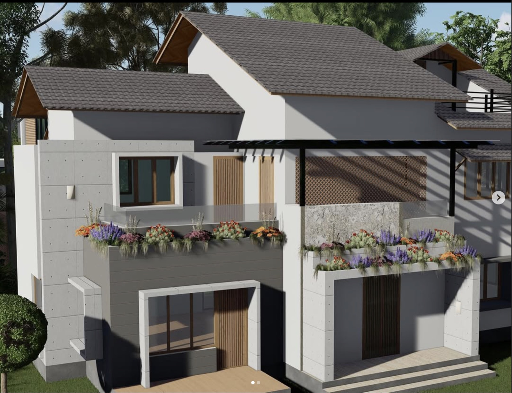
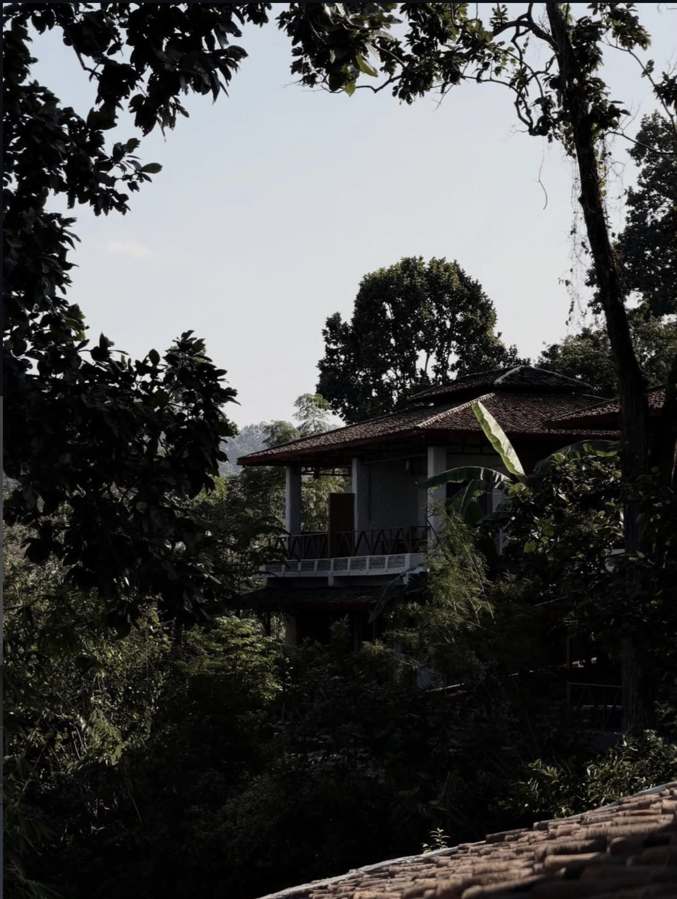
03
Projects built
04
In design
02
Concept studies
1valley
Chitwan, Nepal